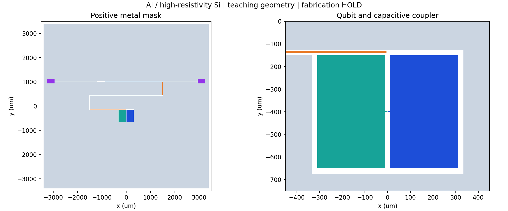
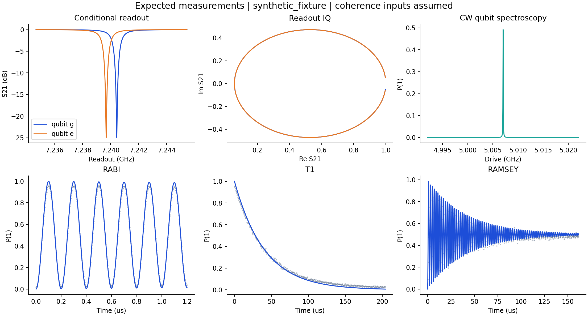

Aluminum on high-resistivity silicon | 20.0 mK | 4.0-12.0 GHz target band
| Source | synthetic_fixture |
|---|---|
| f01 (GHz) | 5.007043 |
| Anharmonicity (MHz) | -269.411 |
| Bare readout (GHz) | 7.238406 |
| g / 2pi (MHz) | 74.630 |
| chi / 2pi (MHz) | -0.376 |
| EJ / h (GHz) | 14.5000 |
| EC / h (GHz) | 0.2383 |
| Effective qubit C (fF) | 81.283 |
| Junction Ic (nA) | 29.194 |
| Junction LJ (nH) | 11.273 |
| Conditional T1 (us) | 40.826 |
| Conditional T2 (us) | 40.409 |


Circuit and quantum parameters · GDSII · Inverse electrical target · Run provenance
The inverse target is separate from the forward geometry prediction. Meander end corrections, substrate dispersion, kinetic inductance, interfaces, package and the real process require validation.